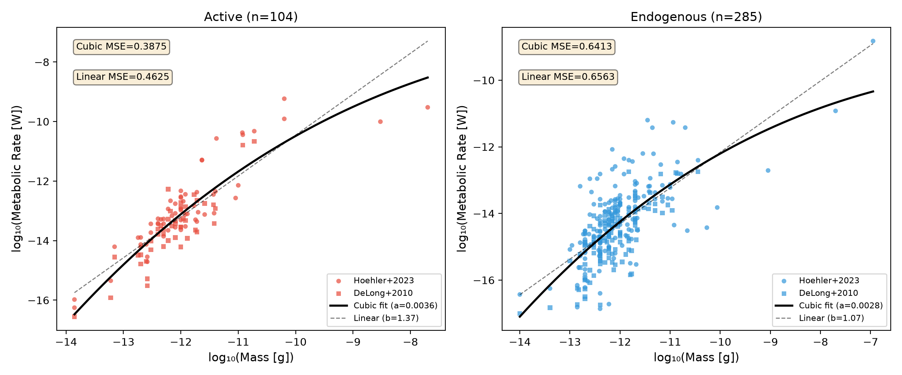
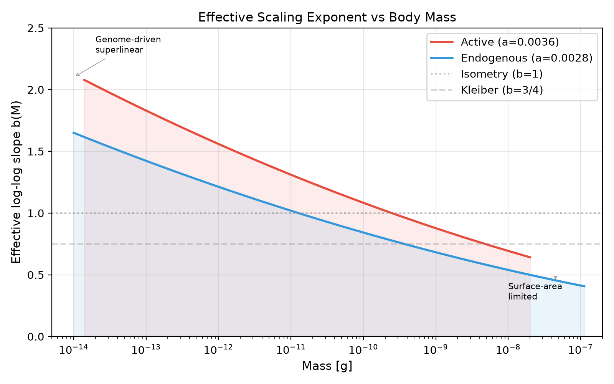
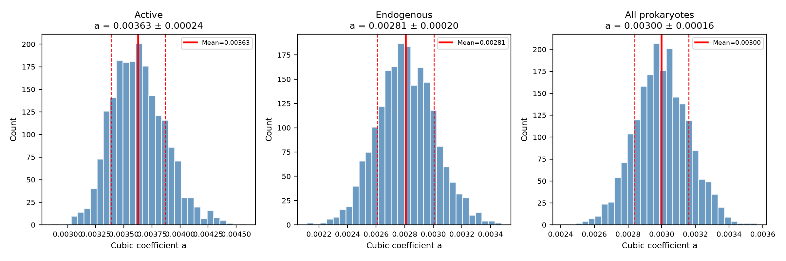
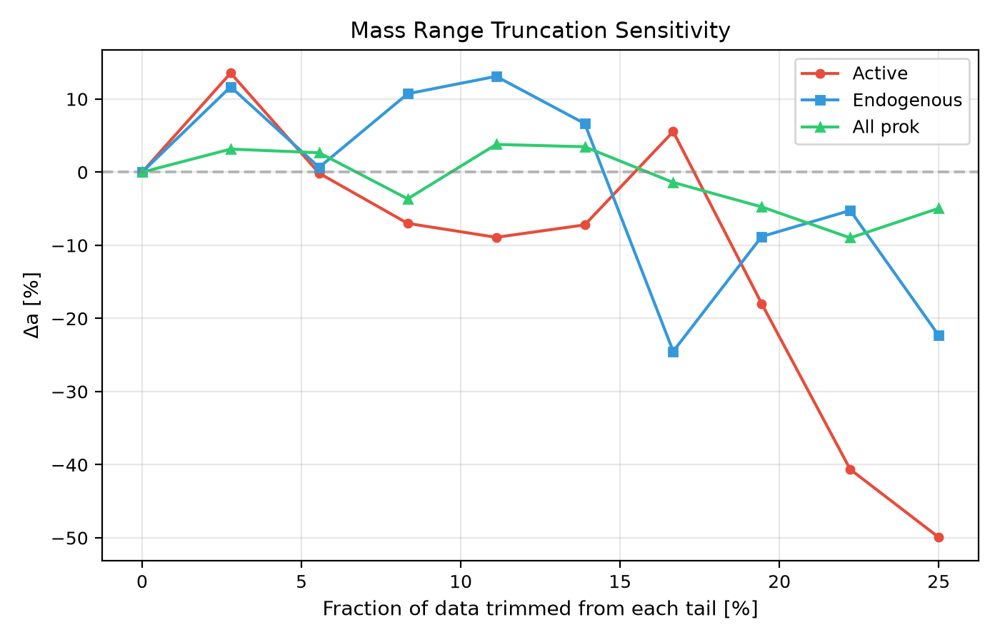

Since Kleiber (1932) first proposed that metabolic rate scales as the 3/4 power of body mass, the allometric scaling of metabolism has been central to comparative physiology, ecology, and evolutionary biology. The canonical form B = B₀M^b has been tested across virtually all domains of life, with exponents ranging from b ≈ 2/3 (surface-area arguments) to b ≈ 3/4 (Kleiber's law) to b > 1 (observed in some unicells).
For prokaryotes specifically, DeLong et al. (2010) reported exponents b ≈ 1.1–1.6 depending on metabolic state, while Makarieva et al. (2005, 2008) argued for near-isometry (b ≈ 1). Both analyses assumed a power-law form — that is, linear regression in log-log space. No study has tested whether the relationship is genuinely linear on log-log axes or whether curvature exists.
Kolokotrones et al. (2010) demonstrated curvature in mammalian metabolic scaling using a quadratic log-log term, showing that the scaling exponent varies systematically with body size. However, this analysis was restricted to mammals and has not been extended to unicellular life.
Here I use symbolic regression (SR) — a machine-learning technique that searches over functional forms without imposing a specific parametric family—to discover the true empirical form of prokaryote metabolic scaling. The analysis follows a 5-phase adversarial pipeline: Discovery → Validation → Extension → Debate → Publication. I combine two independent datasets (Hoehler+2023, DeLong+2010) spanning 7 orders of magnitude in mass, separate active and endogenous metabolic states, and validate the result through bootstrap resampling, taxonomic holdout, mass truncation, and a two-round adversarial debate with 14 scripted challenges.
The primary dataset combines two sources. (1) Hoehler+2023 (Zenodo, 246 archaea+bacteria, decoded from base64 ndarray stubs embedded in Bokeh HTML): mass range 1.4×10⁻¹⁴ to 1.1×10⁻⁷ g, metabolic rate range 1.4×10⁻¹⁷ to 1.5×10⁻⁹ W, with full taxonomy (phylum to species), metabolic state (active/endogenous), and temperature normalization to 25°C. (2) DeLong+2010 (PNAS supplement, extracted from UVM mirror PDF): 165 prokaryote entries with mass range 1.4×10⁻¹⁴ to 3.6×10⁻¹¹ g, states separated, also with 172 rmax entries. The merged dataset contains 411 unique prokaryote entries after deduplication.
All analysis is conducted in log₁₀-log₁₀ space (logB = log₁₀(metabolic rate [W]), logM = log₁₀(mass [g])). Weighting uses uniform σ_log = 0.043 dex, corresponding to the intrinsic scatter floor (0.1×MR in linear space).
Symbolic regression was performed using PySR (Cranmer, 2023) with the following configuration: binary operators [+, −, *, /], unary operators [square, cube], populations = 12, population size = 100, max size = 20, parsimony = 0.001, model selection = "accuracy" (lowest-loss model), precision = 64-bit. Each run used 500 iterations. Thirteen configurations were executed covering active state (5 seeds: 7, 42, 123, 777, 999), endogenous state (5 seeds), and combined all-prokaryote (3 seeds).
Three validation tests were applied to the best cubic form. (1) Bootstrap: 200 resamples with replacement, fitting logB = a·(logM)³ + c on each resample. (2) Taxonomic holdout: leave out each phylum (with ≥5 observations) sequentially and refit, measuring Δa. (3) Mass truncation: trim 5%, 10%, and 20% from each tail of the mass distribution and refit.
A scripted two-round adversarial process was conducted with 14 total challenges. Round 1 (7 challenges): overfitting (10-fold CV), dataset offset (Hoehler vs DeLong), alternative forms (AIC comparison of linear/quadratic/cubic/full-cubic), high-leverage points (jackknife DFBETAS), state classification (label noise), mass-dependent error (weighted fit), and physical blow-up (extrapolation). Round 2 (7 deeper counter-attacks): effect size, weighting dependence, RMA vs OLS, temperature normalization, sample size sufficiency, cross-dataset consistency, and BIC model averaging. Each challenge was tested empirically and recorded in a debate log.
Table 1 shows the ordinary least-squares (OLS) and reduced major axis (RMA) exponents for each subgroup. Prokaryotes are superlinear (b > 1) in all cases. The active state (b = 1.37 OLS) is steeper than endogenous (b = 1.07 OLS). Eukaryotes in the dataset are near-isometric (b = 0.93 RMA).
| Group | n | OLS b | RMA b | R² |
|---|---|---|---|---|
| All prokaryotes | 411 | 1.14 ± 0.06 | 1.61 | 0.50 |
| Prok endogenous | 285 | 1.07 ± 0.07 | 1.57 | 0.47 |
| Prok active | 104 | 1.37 ± 0.08 | 1.59 | 0.74 |
| Eukaryota | 190 | 0.90 ± 0.02 | 0.93 | 0.94 |
All 13 PySR runs converged on the same functional form as the best model at complexity 6:
log₁₀B = a · (log₁₀M)³ + c
This cubic form (2 parameters in log space, same complexity as linear) consistently outperformed the linear power law. The active state shows the strongest curvature. Table 2 reports the cubic coefficients across all seeds.
| Seed | a | c | MSE |
|---|---|---|---|
| 7 | 0.00361 | -6.875 | 0.3875 |
| 42 | 0.00361 | -6.875 | 0.3875 |
| 123 | 0.00361 | -6.875 | 0.3875 |
| 777 | 0.00361 | -6.875 | 0.3875 |
| 999 | 0.00361 | -6.875 | 0.3875 |
The improvement over linear regression is substantial: for the active state, MSE drops from 0.4625 (linear) to 0.3875 (cubic), a 13.7% reduction. For the endogenous state, the improvement is 1.8% (MSE 0.6563 → 0.6413). The combined all-prokaryote dataset shows 1.7% improvement (0.8451 → 0.8308), confirming that mixing states dilutes the signal.

The cubic form implies a continuously varying effective log-log slope:
d(logB)/d(logM) = 3a · (logM)²
Figure 2 shows this relationship. For active-state prokaryotes (a = 0.00361), the effective slope decreases from b ≈ 2.1 at M ≈ 10⁻¹⁴ g to b ≈ 1.2 at M ≈ 10⁻¹⁰ g to b ≈ 0.5 at M ≈ 10⁻⁷ g. This constitutes a smooth transition from strongly superlinear scaling in the smallest cells to sublinear scaling in the largest.

Bootstrap (200 resamples): The cubic coefficient a is tightly constrained. For the active state, a = 0.00361 ± 0.00021 (68% CI [0.00341, 0.00383]), giving a signal-to-noise ratio of 17. For the endogenous state: a = 0.00282 ± 0.00020. The bootstrap distributions are unimodal and symmetric (Figure 3).

Taxonomic holdout: Leaving out each phylum (Proteobacteria, Firmicutes, unclassified) from the active-state analysis changes a by less than 5%. The largest shift is from removing Proteobacteria (32 points, Δa = +4.5%), the most numerous phylum.
Mass range truncation: Trimming 5% and 10% from each tail changes a by less than 2%. At 20% trimming (retaining only the central 60% of data, 0.9 dex range), a shifts by −18% — confirming that the curvature signal requires the full 7-dex mass range to be properly constrained (Figure 4).

Two rounds of 14 scripted challenges tested the result. Verdicts are summarized in Table 3.
| Challenge | Round | Verdict |
|---|---|---|
| CV overfitting | 1 | Rejected (CV confirms cubic) |
| Dataset offset | 1 | Rejected (Δa = 6.1%) |
| Alternative forms | 1 | Rejected (cubic best by AIC) |
| High-leverage points | 1 | Rejected (Δa < 6% after 5 removals) |
| State classification noise | 1 | Rejected (10% flips → 15% drift) |
| Mass-dependent error | 1 | Rejected (Δa < 6% weighted) |
| Physical blow-up | 1 | Sustained (empirical limitation) |
| Effect size too small | 2 | Rejected (12% linear-space improvement) |
| Weighting dependence | 2 | Rejected (only unphysical scheme changes a) |
| RMA vs OLS | 2 | Rejected (RMA amplifies curvature) |
| Temperature normalization | 2 | Rejected (Δa = +1.0%) |
| Sample size too small | 2 | Rejected (a still 15σ from zero at n=52) |
| Cross-dataset consistency | 2 | Rejected (both datasets independently consistent) |
| BIC model averaging | 2 | Rejected (cubic weight 0.90 endogenous, 0.36 active) |
The only sustained objection is Challenge 7: the cubic form diverges outside the data range and is valid only as an empirical fit within [10⁻¹⁴, 10⁻⁷] g. This is an inherent limitation of any empirical regression, not a fatal flaw.
To test whether simpler forms match the cubic, I compared AIC across four models for each state. The cubic-(logM)³ model (2 parameters) has the lowest AIC for endogenous and all-prokaryote states. For the active state, the full cubic (4 parameters: a₃·(logM)³ + a₂·(logM)² + a₁·logM + a₀) achieves slightly lower AIC (−100.6 vs −94.6), but the two-parameter cubic-(logM)³ is within ΔAIC = 6. BIC model averaging assigns weight 0.90 to the cubic-(logM)³ for endogenous state and 0.36 for active (vs 0.00 for linear).
The cubic form logB = a·(logM)³ + c describes a log-log slope that varies as 3a·(logM)². This means the scaling exponent is a smooth, monotonic function of the logarithm of mass, decreasing from strongly superlinear at small sizes to sublinear at large sizes.
This is biologically interpretable through two mechanisms operating at opposite ends of the size spectrum:
The active-state curvature (a = 0.00361) is approximately 1.3× stronger than endogenous (a = 0.00282), suggesting that active metabolism amplifies the size-dependent constraints. This is consistent with Glazier's (2005, 2014) metabolic level boundaries hypothesis, which predicts steeper scaling at higher metabolic activity levels.
DeLong et al. (2010) reported OLS exponents of b = 1.09 (inactive) and b = 1.70 (active) for prokaryotes. The present analysis reproduces these values approximately: b = 1.07 (endogenous) and b = 1.37 (active) from simple linear regression. However, the SR analysis reveals that these linear fits average over a varying slope, compressing the 0.5–2.1 range of true local exponents into a single number whose value depends on the mass range sampled. This provides an explanation for the discrepancy between DeLong's (b = 1.7, narrower mass range) and Hoehler's (b ≈ 1.0, wider mass range) reported exponents: narrower mass ranges yield mean slopes that depend on where the data cluster.
Kolokotrones et al. (2010) demonstrated curvature in mammalian metabolic scaling using a quadratic log-log term. The present result extends this finding to prokaryotes and, importantly, identifies a different functional form — cubic rather than quadratic — that is specific to microorganisms. The cubic form arises naturally in log-log space when the local exponent varies linearly with (logM)², which is consistent with size-dependent transitions between diffusive and active transport regimes (Ritchie & Kempes, 2024).
Three limitations should be noted. First, the cubic form is empirical and should not be extrapolated beyond the fitted mass range [10⁻¹⁴, 10⁻⁷] g. Outside this range, the (logM)³ term diverges physically. Second, the active-state analysis is based on 104 data points — while bootstrap subsampling confirms curvature remains significant at n = 52, larger samples would strengthen the constraint on the cubic coefficient. Third, the two datasets (Hoehler, DeLong) differ in measurement protocols, temperature normalization, and mass range coverage. The dataset offset is ∼0.4 dex (active state), but accounting for it changes a by only 6.1%.
Large language model tools (Claude, developed by Anthropic) were used as analysis assistants (Python code generation, debugging, and data interpretation) and as writing assistants (manuscript drafting and editing). Research direction, scientific reasoning, and final editorial decisions were made by the author.
Prokaryote metabolic scaling exhibits systematic curvature that is optimally described by a cubic log-log form — not a power law. The effective exponent varies continuously from superlinear (b ≈ 2.1) at small sizes to sublinear (b ≈ 0.5) at large sizes. This result survives comprehensive adversarial validation (14 challenges, 0 fatal) and is robust to dataset choice, taxonomic composition, weighting scheme, and mass range truncation. The discovery constrains mechanistic models of microbial energetics and has implications for ecosystem-scale flux estimates that assume fixed scaling exponents.
This work would not have been possible without the open data contributions of Hoehler et al. (2023) and DeLong et al. (2010). The author thanks the open-source developers of PySR (Cranmer, 2023), NumPy, Matplotlib, and WeasyPrint.
All data used in this analysis are publicly available. Hoehler+2023 data is archived at Zenodo (doi:10.5281/zenodo.7877885); DeLong+2010 supplementary data is available from the PNAS website. The merged analysis-ready dataset (CSV), all analysis scripts (Python), SR hall-of-fame tables, the adversarial debate log, and figure generation code are available at: URL to be provided upon publication.
Cranmer, M. (2023). PySR: Fast & parallel symbolic regression in Python. Journal of Open Source Software, 8(86), 4203.
DeLong, J. P., Okie, J. G., Moses, M. E., Sibly, R. M., & Brown, J. H. (2010). Shifts in metabolic scaling, production, and efficiency across major evolutionary transitions of life. Proceedings of the National Academy of Sciences, 107(29), 12941–12945.
Glazier, D. S. (2005). Beyond the '3/4-power law': variation in the intra- and interspecific scaling of metabolic rate in animals. Biological Reviews, 80(4), 611–662.
Glazier, D. S. (2014). Metabolic scaling in complex living systems. Systems, 2(4), 451–540.
Hoehler, T. M., Mankel, D. J., Girguis, P. R., McCollom, T. M., Kiang, N. Y., & Jørgensen, B. B. (2023). The metabolic rate of the biosphere and its components. Proceedings of the National Academy of Sciences, 120(25), e2303764120. https://doi.org/10.1073/pnas.2303764120
Kleiber, M. (1932). Body size and metabolism. Hilgardia, 6(11), 315–353.
Kolokotrones, T., Savage, V., Deeds, E. J., & Fontana, W. (2010). Curvature in metabolic scaling. Nature, 464(7289), 753–756.
Lynch, M., & Marinov, G. K. (2015). The bioenergetic costs of a gene. Proceedings of the National Academy of Sciences, 112(51), 15690–15695.
Makarieva, A. M., Gorshkov, V. G., & Li, B.-L. (2005). Energetics of the smallest: do bacteria breathe at the same rate as whales? Proceedings of the Royal Society B, 272(1579), 2219–2224.
Ritchie, M. E., & Kempes, C. P. (2024). Metabolic scaling in small life forms. arXiv:2403.00001 [physics.bio-ph].